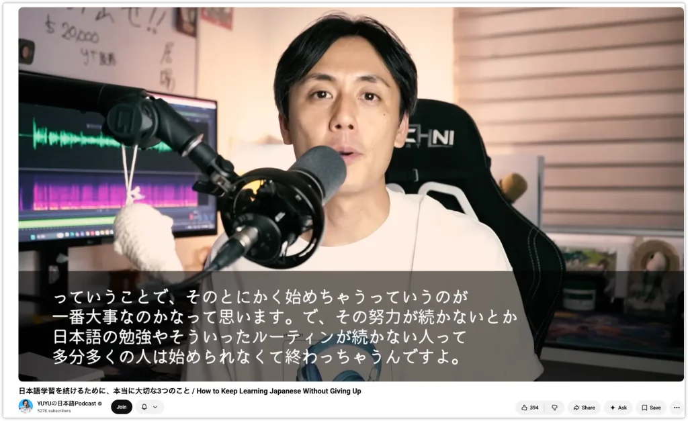
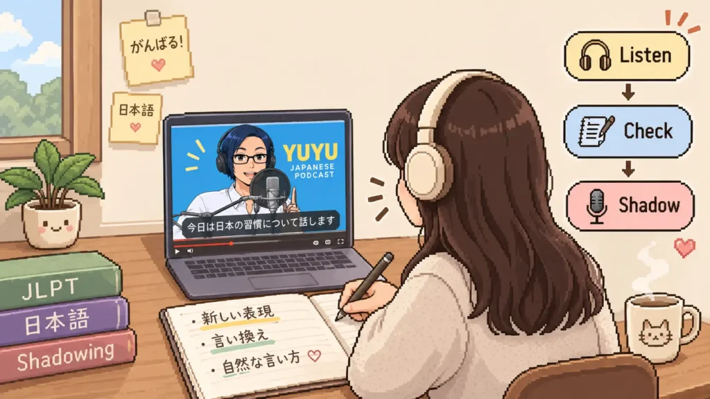
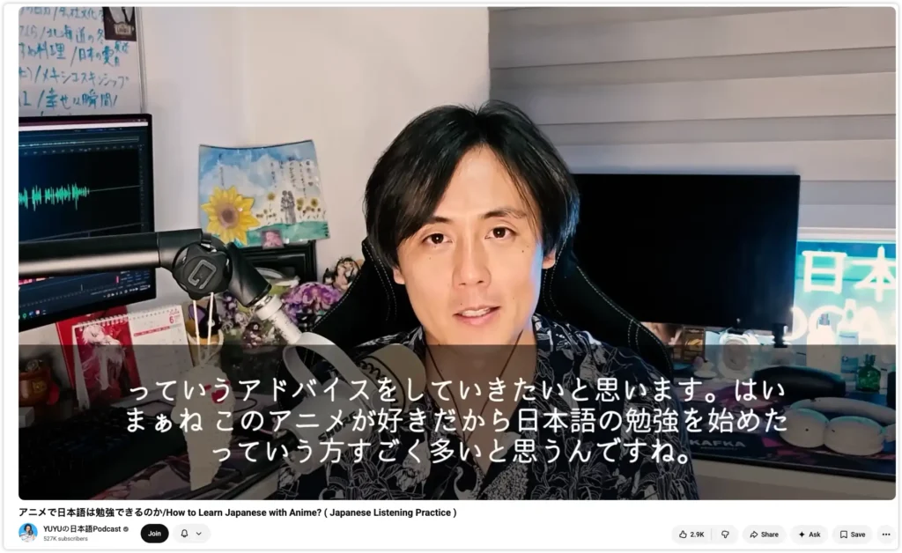
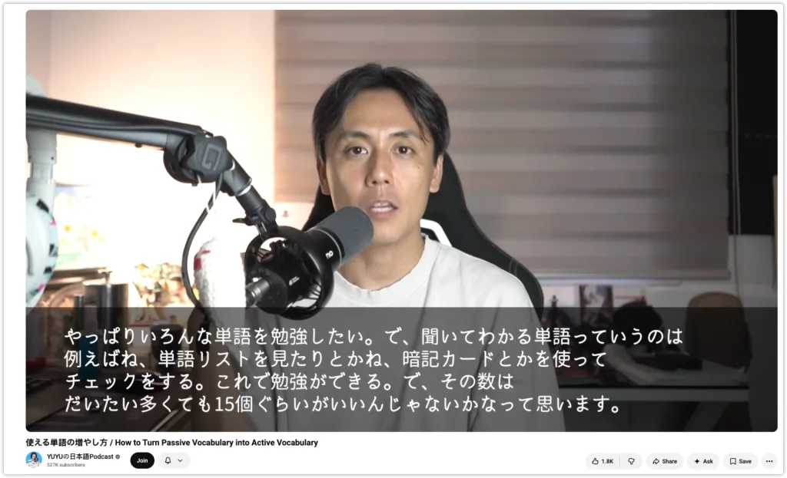

This YUYUの日本語Podcast review is based on three to four years of listening and probably hundreds of episodes. I first started listening because Japanese listening made up a big part of my study routine, but YUYU gradually became one of the few podcasts I still open even when I am not particularly in the mood to “study.”
The balance is what keeps me coming back. YUYU speaks at a pace that feels fairly close to everyday Japanese conversation, but his pronunciation is very clear. When he uses a word or idea that may be difficult, he often explains it again in simpler Japanese instead of immediately translating it.
I also genuinely enjoy him as a host. He is funny, his topics move from Japanese learning and movies to daily life and culture, and a seemingly casual story can sometimes turn into a surprisingly thoughtful discussion.
For learners around JLPT N3–N2, YUYU is one of my strongest Japanese podcast recommendations.
⭐ Quick Verdict
| My Take | |
|---|---|
| Overall rating | ⭐⭐⭐⭐⭐ |
| Best level | N3–N2 |
| Speaking speed | Close to everyday Japanese |
| Pronunciation | Very clear |
| Episode length | Often around 20–40 minutes |
| Best for | Listening, shadowing, conversational Japanese |
| Beginner friendly | ⭐⭐⭐☆☆ |
| Topic variety | ⭐⭐⭐⭐⭐ |
| YouTube study value | ⭐⭐⭐⭐⭐ |
| Patreon | Worth it for active study |
Best for: Intermediate learners ready to move beyond very slow learner Japanese.
My favorite thing: YUYU makes harder Japanese understandable without making the Japanese sound unnaturally slow.
I compared more beginner, intermediate, and advanced options in my guide to the best Japanese podcasts for learners.
🎧 What Level Is YUYUの日本語Podcast?
I would place YUYU around N3–N2, with N3 being the point where I think the podcast becomes especially useful.
The main difficulty is not unusually fast speech. It is being able to follow one topic in Japanese for 20, 30, or sometimes 40 minutes without stopping every time you hear an unfamiliar word.
| Level | My Take | How I’d Use YUYU |
|---|---|---|
| N4 | Challenging | Short clips + transcript support |
| N3 | ⭐ Sweet spot | Full episodes + active listening |
| N2 | Very comfortable | Natural expressions + shadowing |
| N1+ | Easy to follow | Casual immersion + phrasing |
N4: Use Short Sections First
A learner around N4 may understand many individual sentences and still lose the overall thread.
You hear one unknown word, start translating it in your head, and suddenly YUYU is already several sentences ahead. That is why I would not call this a true beginner podcast even though his pronunciation is very clear.
Short sections work much better at this stage. One to five minutes is enough to practice without turning a full episode into an endurance test.
N3: The Sweet Spot
Around N3, YUYU becomes difficult in a productive way.
You can normally understand enough to stay with the topic, while still encountering useful vocabulary, casual grammar, sentence endings, and expressions that do not always appear in beginner textbooks.
That balance matters. Too difficult, and you spend the whole episode lost. Too easy, and there is little left to notice.
YUYU sits nicely in the middle.
N2 and Above: Focus on How He Speaks
At N2 and above, the question becomes less:
Can I understand this sentence?
and more:
How would I say this naturally?
I pay more attention to how YUYU connects ideas, softens an opinion, changes sentence endings, paraphrases something difficult, and moves between a personal story and a broader point.
That makes the podcast useful long after basic comprehension stops being the main challenge.
💬 Why I’ve Kept Listening for 3–4 Years
Plenty of Japanese learner podcasts are useful for a few weeks. Far fewer are interesting enough to stay in my routine for years.
YUYU works for me because the Japanese, the content, and his personality all help at the same time.
1. Natural Speed, Clear Pronunciation
YUYU does not sound like someone reading beginner Japanese word by word.
His pace feels fairly close to normal conversation, but he articulates very clearly. I can usually separate the sounds even when I do not know every word.
That makes him a useful bridge:
slow learner Japanese → YUYU → native podcasts
The jump feels much smaller than moving directly from heavily controlled beginner audio to a fast native conversation.
2. He Paraphrases Difficult Japanese
This is probably the feature I notice most as a learner.
When YUYU thinks a word may be difficult, he often explains it again using easier Japanese. He may give another expression, add an example, or restate the idea before continuing.
The pattern often feels like:
difficult word → simpler Japanese → example/context → understanding
That means I can keep processing the meaning in Japanese instead of immediately switching to Chinese or English.
YUYU is easy to follow not because he only uses easy words, but because he knows how to make difficult Japanese understandable.
3. He Feels More Like a Person Than a Textbook
YUYU jokes, reacts to his own stories, goes off on small tangents, and does not sound as though he is permanently in teacher mode.
Sometimes it feels closer to listening to a friendly person talk about whatever has been on his mind recently.
His voice is also very easy for me to listen to. It is clear, warm, and slightly soft, with a bit of that 優しい feeling that works surprisingly well for longer episodes.
That is subjective, but after hundreds of episodes I no longer think liking someone’s voice is a trivial detail. A listening resource only works long term when you actually want to hear the person speak.
4. The Topics Are Light but Varied
YUYU covers much more than Japanese grammar.
Common topics include:
- Japanese learning
- music and movies
- anime
- travel
- everyday life
- Japanese culture
- personal experiences
- habits and relationships
- broader life reflections
One episode can be practical and study-focused. The next can be about a cultural topic or something that happened in his own life.
That variety is one of the reasons I have not become bored after so many episodes.
5. Casual Topics Often Lead Somewhere Deeper
This is probably my favorite part of his content.
YUYU often begins with something small that happened to him, then uses it to introduce the real topic. By the end, the conversation may have moved into happiness, habits, relationships, learning, or the way he thinks about life.
The structure often feels like:
personal experience → main topic → examples and thoughts → wrap-up
Once I noticed that pattern, longer episodes became easier to follow too. Instead of treating every sentence like a separate listening test, I started listening for where the discussion was going.
6. He Updates Frequently
Another underrated advantage is simply having enough new material.
YUYU updates frequently and covers different subjects, so there is usually something new I want to play. That makes listening easier to turn into a routine.
I do not need to search for a new Japanese resource every morning. I can open the channel, choose a topic that sounds interesting, and start listening.
🎥 The YouTube Channel Is Excellent for Studying
I personally prefer the videos where YUYU appears on camera.
Seeing his facial expressions and gestures gives me extra context, keeps me more engaged during a longer monologue, and helps when I want to imitate the way he actually delivers a sentence.
The YUYUの日本語Podcast YouTube channel also does something I really appreciate: many of the talking-head videos include Japanese subtitles directly on screen.

That is surprisingly useful.
I can follow this sequence without leaving the video:
listen → check the Japanese subtitle → listen again → shadow
I do not need an English translation every time I miss something.
For shadowing, seeing YUYU also lets me notice more than pronunciation:
- pauses
- rhythm
- emphasis
- facial expression
- where he speeds up or slows down
- how his delivery changes with the meaning
My full guide to shadowing for language learning explains the listen → check → imitate → reuse process in more detail.
🧠 What I’ve Actually Learned From YUYU

One reason I rate YUYU so highly is that the content itself often contains useful language-learning advice.
I do not only get Japanese input from the episodes. Some of his ideas have changed how I study.
Episode 1: Stop Trying to Understand Every Word
One episode about understanding Japanese conversation changed how I think about listening.
I used to treat listening like a test. Missing one word felt like failing the sentence.
But real conversations are messy. People repeat themselves, change direction, add unnecessary details, go off topic, and sometimes do not even know exactly what they want to say when they begin.
Trying to understand 100% of every word is not a realistic goal.
The four ideas I kept from that episode:
- Find the topic first. Work out what the person is talking about before worrying about every unknown word.
- Predict what comes next. Context gives you possible vocabulary and ideas before you hear them.
- Listen selectively. The main message matters more than catching every side comment.
- Notice signposts. Expressions such as
つまり,僕の言いたいことは, andこれ大事なポイントなんだけどtell you where to focus.
A practice idea I liked was starting a Japanese livestream or podcast midway through and seeing how quickly I could identify the topic.
🔔 What I changed: I now judge listening by whether I can follow the speaker’s message, not by whether I caught every word.
Episode 2: Can You Really Learn Japanese From Anime?
I originally became interested in Japanese partly because of anime, so this topic felt very familiar.
The embarrassing part is that after watching anime for years, I am not sure all those hours improved my Japanese as much as I once imagined.
A lot of the time, I was doing this:
eyes on Chinese subtitles → understand through the visuals → barely process the Japanese
I could understand the story while listening surprisingly little.
YUYU’s point was not that anime cannot teach Japanese. It was that what you should learn from anime changes with your level.
| Level | What to Focus On |
|---|---|
| Beginner | Connect words with their sounds |
| Intermediate | Grammar, sentence endings, verb forms |
| Advanced | Word choice, tone, pronunciation, character voice |
For beginners, recognizing a word you already studied when a character says it is useful progress.
At intermediate level, grammar becomes more interesting. You can notice casual verb forms, contractions, sentence endings, and when particular structures appear.

Advanced learners can look more closely at nuance: why one character chooses a particular word, how personality affects speech, and what intonation adds to a line.
My Three-Watch Method
I like giving each watch a different purpose.
- First watch: understand the story. Use subtitles when necessary and enjoy the episode.
- Second watch: turn the subtitles off. Check whether you can still follow the overall meaning.
- Third watch: focus on the Japanese. Notice vocabulary, grammar, endings, pronunciation, and tone.
This feels much more useful than vaguely telling myself to “learn Japanese from anime.”
Episode 3: Turning Passive Vocabulary Into Active Vocabulary
Another YUYU video I really liked is 「使える単語の増やし方 / How to Turn Passive Vocabulary into Active Vocabulary」.

The main distinction is simple but useful:
| Vocabulary Type | What It Means |
|---|---|
| Unknown vocabulary | I do not understand it yet |
| Passive vocabulary | I understand it but cannot easily use it |
| Active vocabulary | I understand it and can use it myself |
This explains something I experience constantly.
Recognizing a word and producing that word are different skills.
I use a similar distinction in my own approach to learning Japanese vocabulary, especially when separating recognition from active recall and use.
YUYU suggests several ways to move words toward active vocabulary.
1. Learn Vocabulary by Topic
Words are easier to retrieve when they belong to a context.
Cooking vocabulary, for example, becomes more useful when learned around the same topic instead of being mixed randomly with unrelated words.
The material you consume also shapes the vocabulary you encounter. Someone who wants to talk about cooking needs different input from someone trying to understand Japanese news.
2. Keep Your Active Vocabulary Target Small
One idea from the video is to learn more vocabulary for recognition than for active use.
YUYU gives an example of roughly 15 words for understanding and five words for active use per day.
I like the distinction more than the exact number.
Trying to force every new word into active vocabulary creates far too much work. A smaller group of useful words can get the repeated speaking practice they actually need.
3. Try to Speak Before Looking Up the Word
This is my favorite method from the video.
Choose a topic and start speaking or writing before preparing all the vocabulary.
Eventually, you reach a point where you know exactly what you want to say but do not know how to say it in Japanese.
That missing word suddenly matters.
Looking it up at that moment creates a much stronger memory than memorizing another random item from a list.
🔔 Another Idea I Loved: Your Japanese Does Not Need to Sound Like Everyone Else’s
The last part of that video goes beyond vocabulary.
Many learners want to sound perfectly “natural,” but there is no single version of natural Japanese. Age, job, personality, social group, interests, and life experience all affect how someone speaks.
The Japanese you build also comes from everything you have watched, read, listened to, and studied.
I really like the idea of choosing expressions that feel like something I would actually want to say, rather than trying to imitate an imaginary perfect Japanese speaker.
That is one reason YUYU’s learning advice works for me. It is practical, but it also leaves room for your own personality.
💻 YouTube vs Spotify: Which One Do I Use?
I use YouTube and Spotify for different purposes.
| I want to… | I use |
|---|---|
| Study with Japanese subtitles | YouTube |
| Shadow YUYU | YouTube |
| Watch facial expressions and delivery | YouTube |
| Replay short study sections | YouTube |
| Listen while commuting | Spotify |
| Get relaxed Japanese input | Spotify |
| Listen without turning it into a lesson | Spotify |
YouTube: Better for Active Study
YouTube is my first choice when I want to study.
The combination of:
on-camera YUYU + Japanese subtitles + useful learning topics
makes it easy to move from normal listening into active practice.
It is particularly good for shadowing because I can see how the sentence is delivered instead of only hearing the audio.
Spotify: Better for Casual Listening
Spotify is what I use when I simply want Japanese in my day.
YUYU has mentioned on the podcast that the Spotify side will not necessarily mirror everything uploaded to YouTube. Without needing to appear on camera, he wants the audio podcast to feel more casual and show a more relaxed side of himself.
That makes Spotify especially nice for commuting, walking, or listening before bed.
🎙️ How I Actually Study With YUYU
I do not study every episode intensively.
That is probably one reason I have managed to listen for several years.
I use two modes depending on what I want from the episode.
Mode 1: Casual Listening
Most of the time, the goal is:
topic → main message → useful expressions
I listen while:
- commuting
- walking
- doing chores
- doing simple work
- sometimes before bed
I do not pause for every unknown word.
I do not look up everything.
I try to stay with the speaker even when one small part is unclear.
This type of extensive listening has helped me become much more comfortable with longer Japanese.
Mode 2: Intensive Listening
When an episode contains a section I really want to learn from, I usually take one to five minutes and work through it properly.
| Step | What I Do |
|---|---|
| 1. Listen | Follow the topic without reading |
| 2. Transcribe | Write what I hear sentence by sentence |
| 3. Check | Compare with the transcript |
| 4. Read aloud | Follow the audio 3–5 times |
| 5. Shadow | Close the text and imitate YUYU |
| 6. Listen again | Return to meaning without the transcript |
Step 1. Listen Without the Text
I first ask:
What is the topic?
What is YUYU trying to say?
I do not begin by collecting unknown vocabulary.
Step 2. Transcribe What I Hear
I pause sentence by sentence and write down what I hear.
When I hear the word but cannot remember the kanji, I write it in kana first.
🔔 My rule: this is listening practice, not a kanji test.
Step 3. Check the Transcript
I compare my version with the original and usually sort problems into three categories:
- I did not hear it correctly.
- I heard it, but I did not know the word.
- I knew the words, but I misunderstood the sentence.
That tells me what actually went wrong.
Then I mark useful vocabulary, readings, grammar, and expressions.
Step 4. Read Along 3–5 Times
I play the original audio and read aloud with YUYU.
I focus on:
- pronunciation
- rhythm
- pauses
- new vocabulary
- sentence endings
I do not want a new word to exist only as kanji in my notes. I want to recognize its sound immediately too.
Step 5. Close the Text and Shadow
Then I remove the transcript and shadow the audio.
A section that repeatedly makes me stumble gets rewound and repeated. I do not keep moving forward while making the same mistake.
Step 6. Listen Again for Meaning
Finally, I listen again without the transcript.
For a short section I have studied intensively, I want comprehension to feel close to complete by the end.
Sometimes I also replay a familiar section at 1.25× or 1.5× speed as an extra processing challenge.
💛 Is YUYU’s Patreon Worth It?
I eventually joined YUYU’s Patreon because I wanted to use the podcast more seriously for study. I paid for the membership myself and chose the ヘビーリスナー / Heavy Listener tier, which cost HKD 40 (about US$5) per month when I joined. Everything in this section is based on my own experience as a paying member.
My verdict is straightforward:
Casual listening: You do not need it.
Intensive listening and shadowing: I think it is worth it.
What I Use as a Heavy Listener
| Feature | Why It Helps Me |
|---|---|
| Podcast scripts | Check exactly what I misheard |
| Furigana versions | Connect sound with written Japanese |
| Vocabulary tables | Less vocabulary prep |
| Multilingual meanings | Useful beyond Japanese-English lookup |
| Shadowing website | Easier structured practice |
| Script archive | Go back to older episodes |
The tier also includes regularly added podcast scripts, monthly topic requests, supporter credits, and access to a page for downloading podcast scripts.
The Scripts Make Intensive Listening Much Easier
The transcript is probably the part I use most.
I can listen without text first and then check exactly where comprehension broke down.
Did I fail to hear the sound?
Did I hear it correctly but not know the vocabulary?
Did I know every word but misunderstand the sentence?
Having the original script makes those differences much easier to spot.
The furigana version is especially useful when I recognize a sound but do not immediately know the kanji.
I Really Like the Vocabulary Tables
In the member materials I use, vocabulary is already organized into tables with readings and meanings, including multilingual support.
I prefer this to a long unstructured word list.
Without prepared materials, an intensive study session can start with a surprising amount of admin:
find the transcript → check readings → look up vocabulary → organize notes → finally begin practicing
The vocabulary tables remove part of that preparation.
The Shadowing Website Is the Biggest Study Upgrade
Heavy Listener members can also access a website designed for shadowing practice.
That makes the membership much more valuable to me as a learner who actually wants to work with the audio.
Instead of preparing everything from scratch, I can move through:
listen → transcript → vocabulary → read aloud → shadow → listen again
That is what I am really paying for: less preparation between finding an interesting episode and actually studying it.
Is It Necessary?
No.
The free YUYU content is already excellent.
I would not pay simply to continue listening.
I pay because the membership makes active study much easier, and for that purpose I think the Heavy Listener tier is worth it.
⚠️ When YUYU May Not Be the Best Podcast for You
YUYU is one of my favorites, but it is not the right starting point for every learner.
You Are a Complete Beginner
Twenty or thirty minutes of fairly natural Japanese can be exhausting when basic listening still requires heavy translation.
A slower learner podcast gives you a better starting point. My Japanese podcasts by level guide includes easier options before moving up to YUYU.
You Prefer Very Short Lessons
YUYU works well for long-form listening, but it is not always the best choice when you want a five-minute lesson focused on one grammar point.
For intensive practice, I solve this by choosing a short section instead of studying the whole episode.
You Mainly Need Fast Multi-Person Conversation
Most YUYU episodes train you to follow one person developing a topic.
That is excellent for:
- listening stamina
- explanations
- opinions
- stories
- conversational phrasing
It gives you less practice with:
- interruptions
- rapid turn-taking
- overlapping speech
- unexpected responses
- several different voices
Dramas, interviews, native group podcasts, and actual conversations can fill that gap.
🔄 What to Listen to Before or After YUYU
I see YUYU as a middle step rather than an endpoint.
| Your Situation | What Makes Sense |
|---|---|
| YUYU feels too difficult | Start with slower learner podcasts |
| YUYU feels just challenging enough | Keep it as regular N3–N2 input |
| YUYU feels very easy | Add native podcasts, interviews, and dramas |
| You want more options | Browse my best Japanese podcasts for learners |
I would not rush to native podcasts just because YUYU becomes comfortable. There is still plenty to learn from how he organizes ideas, explains vocabulary, and uses conversational Japanese.
But adding more unpredictable native content gradually helps close the remaining gap.
✅ Final Verdict
After three or four years of listening, my YUYUの日本語Podcast review is still an easy five stars for intermediate learners.
More importantly, it is one of the few Japanese-learning podcasts that has stayed in my routine for years.
The reason is not one standout feature, but the way several things work together:
- natural speaking speed
- clear pronunciation
- teacher-style paraphrasing
- Japanese subtitles on many YouTube videos
- useful language-learning advice
- light but varied topics
- frequent updates
- a personality I genuinely enjoy listening to
It is structured enough to study seriously but relaxed enough that I do not always feel like I am studying.
★★★★★ Highly recommended for N3–N2 learners.
YUYU is especially good once slow learner Japanese starts feeling too controlled but native podcasts still require too much effort. For me, it has been one of the most useful bridge resources between the two.
UYUの日本語Podcast Review FAQs
What JLPT level is YUYUの日本語Podcast?
I recommend it most for learners around N3–N2. N4 learners can still work with shorter sections, but a full 20–40 minute episode requires more listening stamina. At N2 and above, the podcast remains useful for natural phrasing, sentence endings, rhythm, and shadowing.
Is YUYUの日本語Podcast good for beginners?
It would not be my first recommendation for a complete beginner. The pronunciation is clear, but the fairly natural speed and longer episodes can be difficult when basic listening still requires translation. Beginners can start with the slower options in my best Japanese podcasts for learners guide and move to YUYU as longer audio becomes easier to follow.
Does YUYUの日本語Podcast have Japanese subtitles?
Many of the videos I watch on the YUYU YouTube channel include Japanese subtitles directly on screen. I find them especially useful for checking missed phrases and shadowing without switching immediately to an English translation.
Does YUYUの日本語Podcast have transcripts?
I access podcast scripts through the Heavy Listener tier on YUYU’s Patreon. The membership includes scripts, including furigana versions, and access to a script archive. The member materials I use also include vocabulary support.
Is YUYU’s Patreon worth it?
I think it is worth it for active study, especially intensive listening and shadowing. The biggest value for me comes from the scripts, furigana, vocabulary tables, multilingual meanings, script archive, and shadowing website. The free content is already enough for casual listening.
Should I use YUYU on YouTube or Spotify?
I prefer YouTube for studying because of the on-camera videos, Japanese subtitles, and shadowing possibilities. I use Spotify for commuting and casual immersion, especially when I want to listen without turning the episode into a study session.